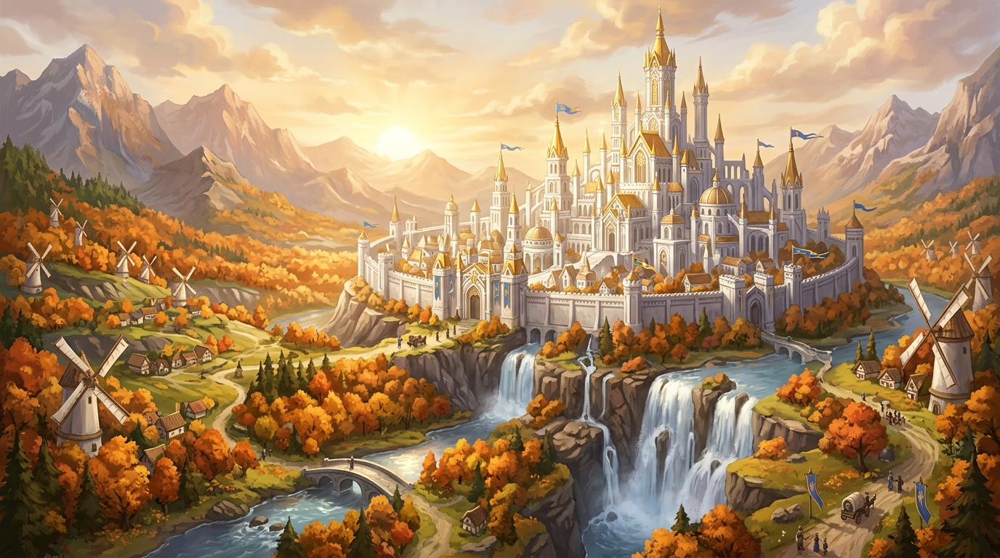
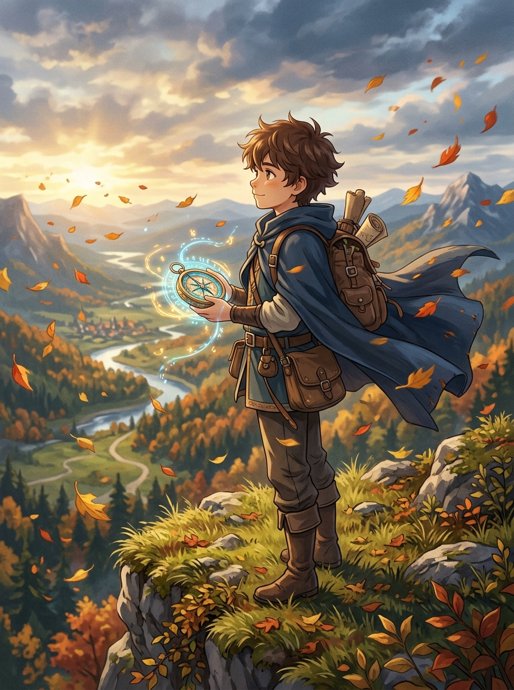

Chapter I
龙与幻想
少年在金色树影下，最后一次俯望自己的家乡。
按住画面暂停时间 · 松开继续旅途 · 在文案区滚轮切章
向下探索 · ENTER THE REALM
Chapter I
少年在金色树影下，最后一次俯望自己的家乡。
按住画面暂停时间 · 松开继续旅途 · 在文案区滚轮切章
当巨龙的传说成为古老王城图书馆里斑驳的细语，真正属于旅人的诗篇，才刚在晨光中苏醒。

王城矗立于平原之巅，清澈的溪流自金色落叶树林间穿流而过，古老的风车推动着整片大陆的生命脉搏。这里没有喧嚣的战火与沉重的枷锁，只有每天清晨准时洒在屋檐上的微温朝阳。
在游戏中，你将扮演一位在温暖山谷中长大的少年。带上爷爷留下的星图罗盘，踩着落叶沙沙作响的山路，一步步走向广阔无垠的西幻大陆，去寻找传说中龙与魔法遗留下来的治愈奇迹。
以电影级美术表现与生成式环境音效，为您呈现前所未有的治愈系冒险体验。
采用高精度实时全局光照系统。从清晨林间的晨雾与丁达尔效应，到正午温暖的金光与黄昏的余晖，每一秒都在为你谱写独特的视觉诗篇。
告别繁琐的加载进度条与空气墙。越过清澈溪流、攀登钟塔、乘着微风滑翔，整片温馨且充满惊喜的大陆任由你自由探索与驻足流连。
由知名管弦乐团倾情录制与底层实时合成音频引擎驱动。背景音乐与自然风声、鸟鸣、脚步声，会根据你的探索轨迹与昼夜交替动态演变。
在旅途中结识那些性格各异、心怀梦想的同伴，共同谱写属于你们的冒险回忆。

“风永远不会停下脚步，它只是在等待下一个愿意展开双翼的人。把故乡留在身后的金色风里吧，前方有更大、更温暖的世界。”
自小在风起之地长大的少年，对远方的王城与未知的大陆充满了无限好奇。他并不擅长挥舞厚重的重剑，却拥有着能聆听风中讯息的绝佳天赋。只要带上他的小皮挎包与发光的罗盘，任何险阻都无法阻挡他前进的步伐。
金色风起之时，我们在王城与平原的交界处等您启程！